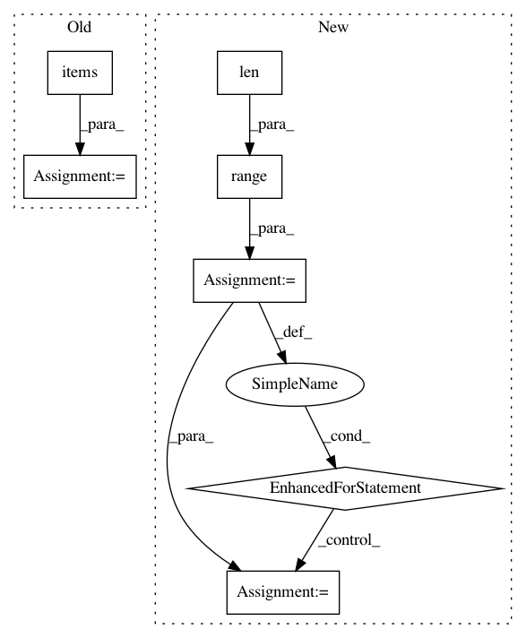

2bc5d43310eeca5c0d00b115b6f73d464f9c5576,src/biopython/sequence/align/matrix.py,SubstitutionMatrix,__init__,#SubstitutionMatrix#Any#Any#Any#,13
Before Change
self._alph2 = alphabet2
if isinstance(matrix, dict):
self._matrix = np.full(( len(alphabet1), len(alphabet2) ), np.nan)
for key, value in matrix.items():
i = alphabet1.encode(key[0])
j = alphabet2.encode(key[1])
self._matrix[i,j] = value
elif isinstance(matrix, np.ndarray):
self._matrix = np.copy(matrix)
else:
raise TypeError("Matrix must be either a dictionary "
After Change
if isinstance(matrix, dict):
matrix_dict = matrix
self._matrix = np.full(( len(alphabet1), len(alphabet2) ), np.nan)
for i in range(len(alphabet1)):
for j in range(len(alphabet2)):
sym1 = alphabet1.decode(i)
sym2 = alphabet2.decode(j)
try:
self._matrix[i,j] = matrix_dict[sym1, sym2]
except KeyError:
pass
elif isinstance(matrix, np.ndarray):
self._matrix = np.copy(matrix)
else:
raise TypeError("Matrix must be either a dictionary "
In pattern: SUPERPATTERN
Frequency: 3
Non-data size: 7
Instances
Project Name: biotite-dev/biotite
Commit Name: 2bc5d43310eeca5c0d00b115b6f73d464f9c5576
Time: 2017-08-10
Author: patrick.kunzm@gmail.com
File Name: src/biopython/sequence/align/matrix.py
Class Name: SubstitutionMatrix
Method Name: __init__
Project Name: reinforceio/tensorforce
Commit Name: daae1077243385f0cb3eeaa52729991b8fc6d704
Time: 2018-09-26
Author: alexkuhnle@t-online.de
File Name: tensorforce/core/networks/layer.py
Class Name: Input
Method Name: tf_apply
Project Name: deepchem/deepchem
Commit Name: 1330ea3102315bd79c9c6efdbd8818c8e2a3cb8f
Time: 2019-07-09
Author: peastman@stanford.edu
File Name: deepchem/metalearning/maml.py
Class Name: MAML
Method Name: fit